6.1 Projects Page
Navigate to the Pages and create a new page named "Projects" or whatever you want to call it. Projects page uses "Projects Page" template from the "Page Attributes".
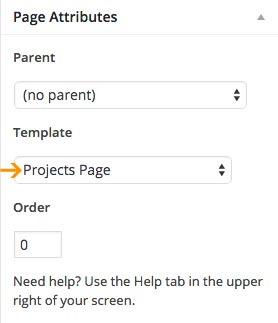
6.1.1. Top Content Block
Navigate to the Pages and open "Projects" page you created . To add the image as a background just upload the featured image. Size of the image we used in the live demo is 2600 x 400px.
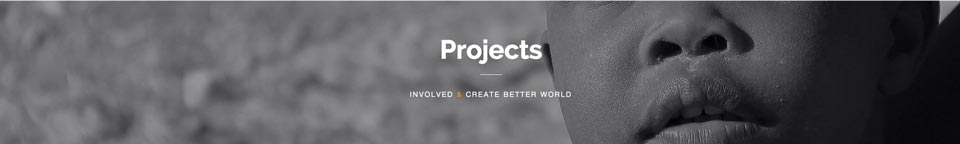
Content on the top of the image pulls the page title and content you add inside the editor.
Content we added in the editor is:
Inside the Customizer > Projects Page you can choose to show top content block or not.
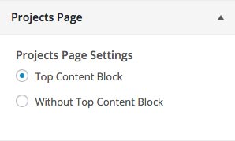
6.1.2. Four Column Child Pages Content
You'll need to open different child pages (as many as you want) and they will show up in 4 column layout.
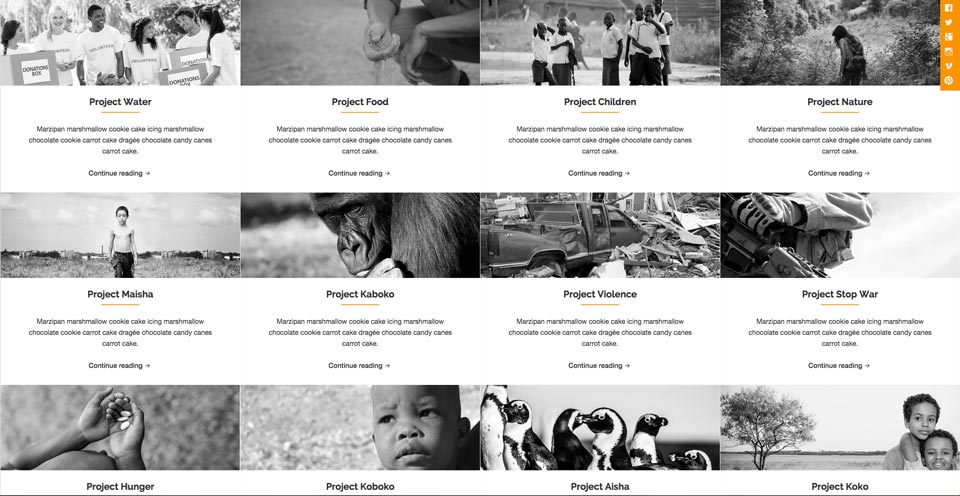
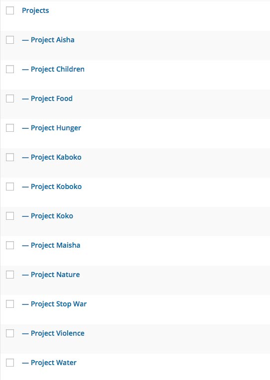
Inside the editor for each child page add the content you want to show and upload the featured image (optional).
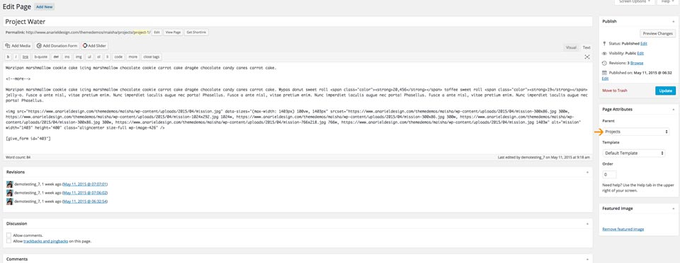
Inside the Page Attributes choose "Parent: Projects" or the name of the page you created above.
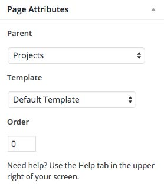
6.2 Causes Page
Navigate to the Pages and create a new page named "Causes" or whatever you want to call it. Causes page uses "Causes Page" template from the "Page Attributes".
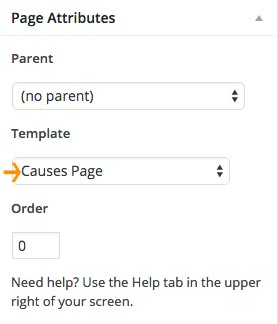
6.2.1. Top Content Block
Navigate to the Pages and open "Causes" page you created. To add the image as a background just upload the featured image. Size of the image we used in the live demo is 2600 x 400px.
Content on the top of the image pulls the page title and content you add inside the editor.
Content we added in the editor is:
Inside the Customizer > Causes Page you can choose to show top content block or not.
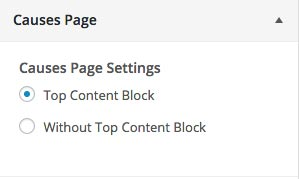
6.2.2. Four Column Child Pages Content
You'll need to open different child pages (as many as you want) and they will show up in 4 column layout.
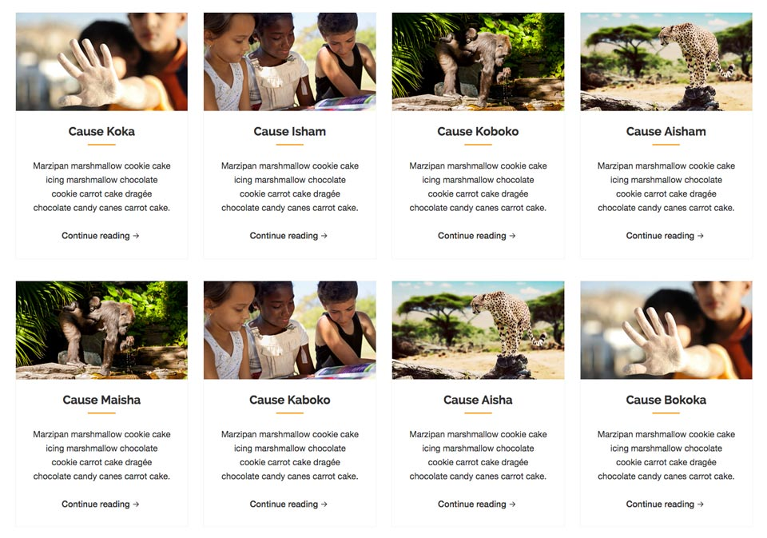
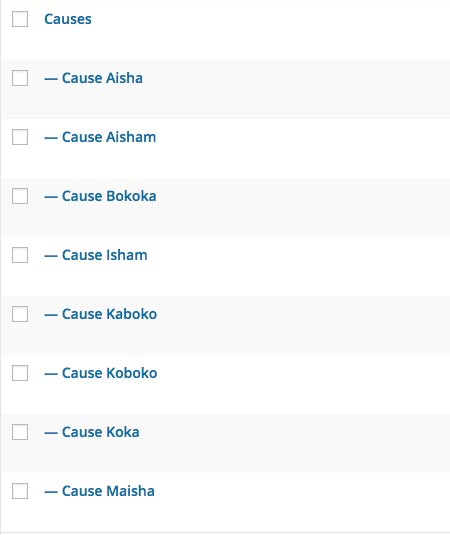
Inside the editor for each child page add the content you want to show and upload the featured image (optional).
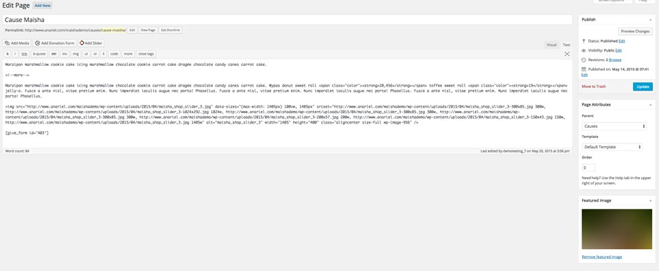
Inside the Page Attributes choose "Parent: Causes" or the name of the page you created above.
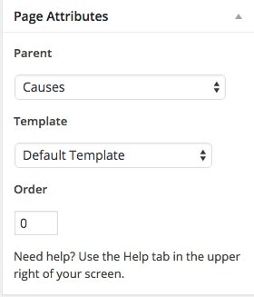
6.3 Stories Page
Navigate to the Pages and create a new page named "Stories" or whatever you want to call it. Stories page uses "Stories Page" template from the "Page Attributes".
6.3.1. Top Content Block
Navigate to the Pages and open "Stories" page you created. To add the image as a background just upload the featured image. Size of the image we used in the live demo is 2600 x 400px.
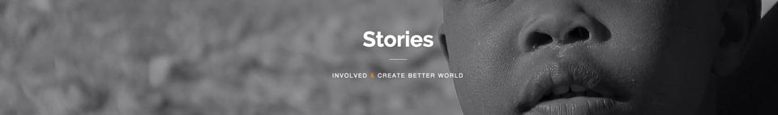
Content on the top of the image pulls the page title and content you add inside the editor.
Content we added in the editor is:
Inside the Customizer > Stories Page you can choose to show top content block or not.
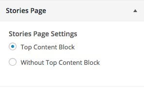
6.3.2. Four Column Child Pages Content
You'll need to open different child pages (as many as you want) and they will show up in 4 column layout.
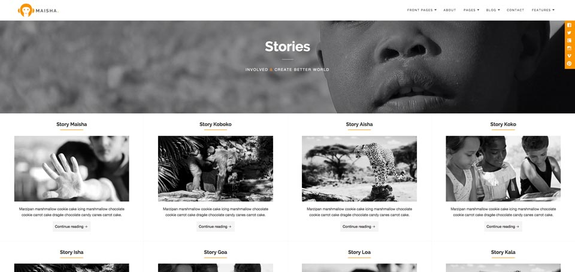
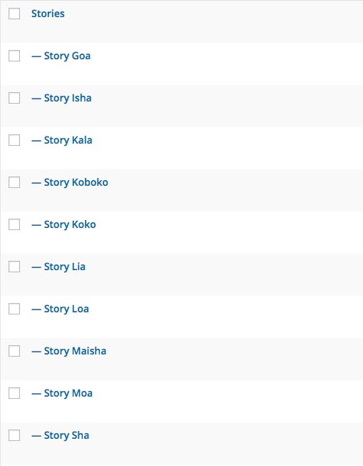
Inside the editor for each child page add the content you want to show and upload the featured image (optional).
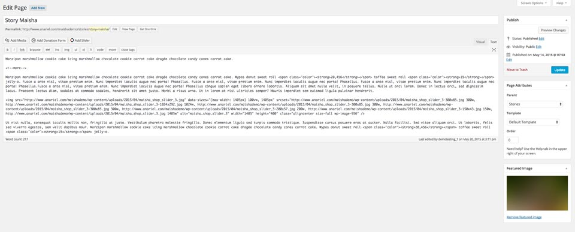
Inside the Page Attributes choose "Parent: Stories" or the name of the page you created above.
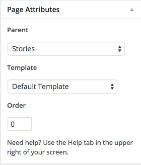
6.4 Our Staff
Navigate to the Pages and create a new page named "Our Staff" or whatever you want to call it. Our Staff page uses "Staff Page" template from the "Page Attributes".
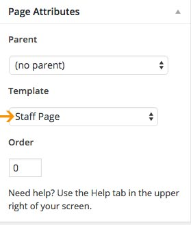
6.4.1. Top Content Block
Navigate to the Pages and open "Our Staff" page you created. To add the image as a background just upload the featured image. Size of the image we used in the live demo is 2600 x 400px.
Content on the top of the image pulls the page title and content you add inside the editor.
Content we added in the editor is:
6.4.2. Three Column Child Pages Content
You'll need to open different child pages (as many as you want) and they will show up in 3 column layout. We used "Full Background Image Page" template inside the "page Attributes"
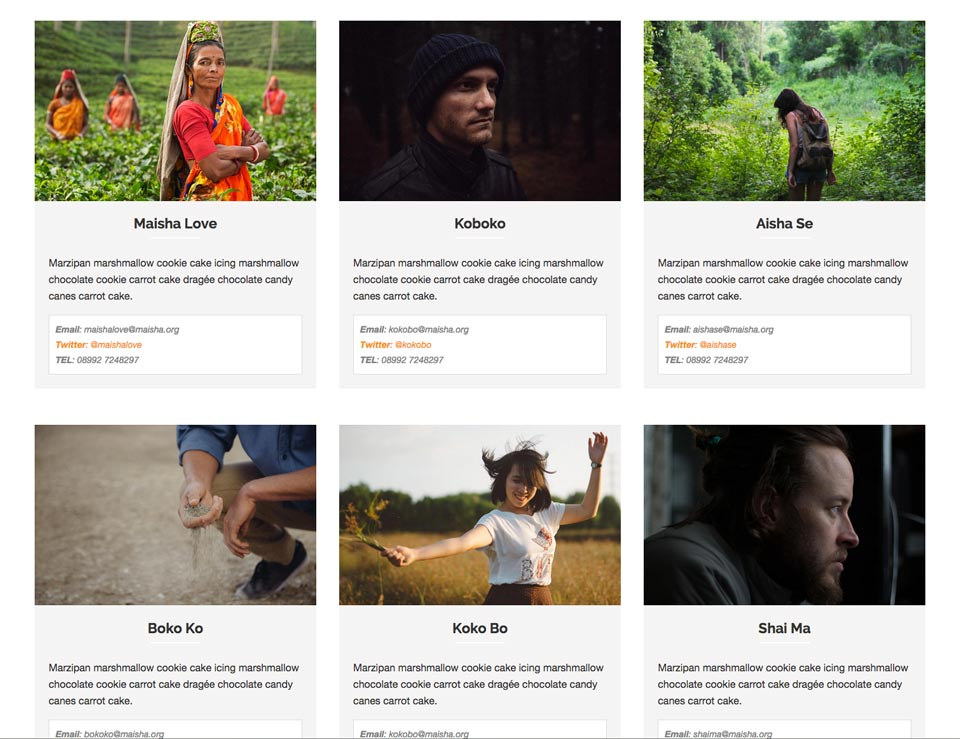
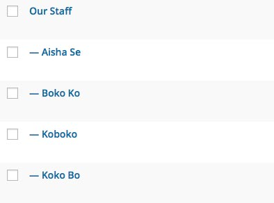
Inside the editor for each child page add the content you want to show and upload the featured image (optional).
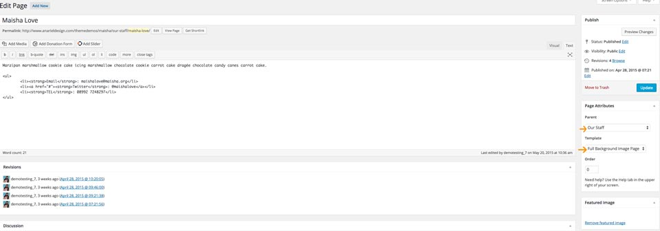
Inside the Page Attributes choose "Parent: Our Staff" or the name of the page you created above.
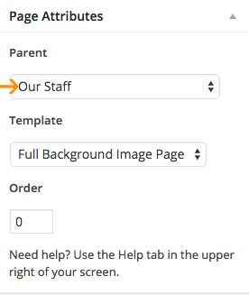